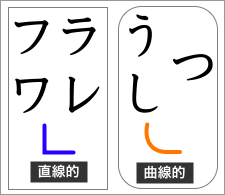
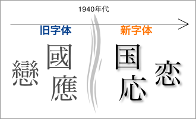
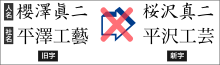
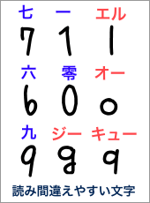
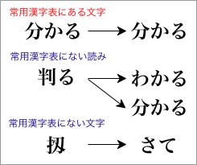
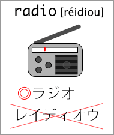

文字に関する注意点
ビジネス文書では、できるだけ正しい表現を心掛ける必要がある。特に、文字についての初歩的な誤りには十分に注意しなければならない。そのような誤りが文書に含まれていると、文書の内容や文書の発信者の信頼性まで損ねるおそれがあるからである。
仮名について
仮名（平仮名とカタカナ）については、以下の点に注意すべきである。
平仮名
まず、平仮名では、活字（フォント）と手書き文字とで字形の違いがあることを知っておく必要がある。
カタカナ
現在では、社名や商品名などにカタカナが使われることも少なくない。特に、社名の誤り（書き間違い）は、相手に対して失礼にあたるため、文字の混同には十分に注意しなければならない。
カタカナで特に間違われやすいのは、「ン」と「ソ」、「ツ」と「シ」である。これらは活字（フォント）でも手書き文字でも混同されやすいので注意が必要である。
活字（フォント）では、カタカナの「ニ」と漢数字の「二」を混同しないようにすべきである。また、手書き文字では、「ユ」と「コ」と「ニ」と「マ」と「ヌ」、「ナ」と「メ」などが混同されやすい。

さらに、手書き文字では、平仮名や漢字との混同にも注意しなければならない。カタカナの「ラ」と平仮名の「う」、カタカナの「レ」と平仮名の「し」、カタカナの「フ」「ワ」と平仮名の「つ」なども間違われやすい。
漢字について
漢字については、以下の点に注意すべきである。
新字体と旧字体
現在、日本で一般に使われている漢字と、台湾で一般に使われている漢字には、字体に違いがある。

日本では、1940年代に漢字の字体の簡略化が行なわれた。その結果、現在の日本では簡略化された漢字が一般に使われている。この簡略化された字体を新字体といい、1940年代以前に用いられていた字体を旧字体という。
現在、台湾で使われている漢字（繁體字）は、字体の簡略化がなされていないもので、日本の漢字では旧字体に相当するものといえる。台湾で使われている漢字を日本語の中で使うと、『60年前の日本語』になってしまうので注意しなければならない。
ただし、人名や社名に使われている旧字体については、（無用のトラブルを避けるため）新字体に改めずに旧字体のままにしておいた方がよい。

印刷字体

各国語フォントによる文字の形の違い
コンピュータでは、フォントによる形の違いにも気をつけなければならない。同じ文字でも、日本語のフォントと中国語のフォントとでは、違う形で表示・印刷されることがある。これには、字体の違いによるものだけでなく、文字のデザインの違いに過ぎない場合もあるが、見る人によっては強い違和感を感じる場合もあるので、日本語の文書は日本語のフォントで印刷するようにしたい。
アルファベット・数字

アルファベット・数字は、「６」と「０」、「g」と「q」など、読み間違えやすい文字に注意する。特に、数字は重要な情報を表わすことが多いので、無用なトラブルを避けるためにも、はっきりと区別しやすい文字で書くようにしたい。
また、略語や固有名詞（社名や商品名など）では、大文字と小文字の区別、スペース（空白文字）の有無などを間違わないようにしなければならない。
◎：mm(ミリメートル) / hPa(ヘクトパスカル) / Microsoft Windows Vista / TOYOTA
×：MM / HPA / Micro Soft windows VISTA / toyota
用字に関する注意点
用字（文字の使い方）についても、注意すべき点がある。以下に、簡単にまとめておく。
同音異義語
日本語は同音異義語（読み方は同じだが意味が異なる語）が多い言語であると言われている。そのため、漢字を使うときには同音による間違いに注意しなければならない。特に、コンピュータで文書を作成するときには変換ミスによる間違いが生じやすいので注意が必要である。
◎ 内蔵のコンピュータ／◎ 漢字の変換ミス／◎ 不審な人物／◎ 誤って転倒した
× 内臓のコンピュータ／× 幹事の返還ミス／× 不振な人物／× 謝って転倒した
以下に、間違いやすい同音異義語をまとめて示しておく。
| よみ | 間違いやすい漢字 | よみ | 間違いやすい漢字 |
| あう | 合う ／ 会う ／ 遭う | けっさい | 決済 ／ 決裁 |
| あける | 開ける ／ 空ける ／ 明ける | こうこく | 広告 ／ 公告 ／ 抗告 |
| あつい | 暑い ／ 厚い ／ 熱い | こうせい | 公正 ／ 更正 ／ 更生 / 校正 / 構成 |
| いがい | 以外 ／ 意外 | じったい | 実態 ／ 実体 |
| いし | 意思 ／ 意志 | しょうかい | 紹介 ／ 照会 |
| いちじ | 一時 ／ 一次 | しょよう | 所用 ／ 所要 |
| いどう | 移動 ／ 異動 ／ 異同 | すすめる | 進める ／ 薦める ／ 勧める |
| おさめる | 納める ／ 収める ／ 治める ／ 修める | せいさく | 政策 ／ 製作 ／ 制作 |
| おす | 押す ／ 推す ／ 捺す | せいさん | 生産 ／ 清算 ／ 精算 ／ 成算 |
| かいてい | 改訂 ／ 改定 | たいしょう | 対象 ／ 対称 ／ 対照 |
| かいとう | 解答 ／ 回答 | たいせい | 体制 ／ 体勢 ／ 態勢 ／ 大勢 |
| かいほう | 開放 ／ 解放 | ついきゅう | 追及 ／ 追求 ／ 追究 |
| かたい | 硬い ／ 固い ／ 堅い | つとめる | 勤める ／ 努める ／ 務める |
| かわく | 乾く ／ 渇く | のばす | 延ばす ／ 伸ばす |
| かんさつ | 監察 ／ 観察 | のぼる | 登る ／ 上る ／ 昇る |
| かんしょう | 鑑賞 ／ 観賞 | はやい | 早い ／ 速い |
| きかい | 機会 ／ 機械／ 器械 | ほけん | 保険 ／ 保健 |
| きじゅん | 基準 ／ 規準 | ほしょう | 保障 ／ 保証 ／ 補償 |
| きせい | 規制 ／ 規正 / 既成 | まざる | 混ざる ／ 交ざる |
| きょうい | 驚異 ／ 脅威 | めいじる | 命じる ／ 銘じる |
| きょうかい | 協会 ／ 教会 ／ 境界 | やぶれる | 破れる ／ 敗れる |
| きょうこう | 強行 ／ 強硬 / 恐慌 | ようけん | 要件 ／ 用件 |
| きょうはく | 脅迫 ／ 強迫 | わかれる | 分かれる ／ 別れる |
常用漢字
同じ文書の中で、ひとつの語を漢字で書いたり仮名で書いたりしていたのでは、読みにくいだけでなく、文書全体がバラバラだという印象を与えてしまうだろう。そのため、公的な文書では、表記を統一するための漢字使用の基準が必要になる。

文書での漢字使用の基準としては、常用漢字表（1981年につくられた1945字からなるリストのこと。日本語能力試験１級の出題基準とほぼ同じ）を基本とすることが多い。具体的には、次のようにすればよい。
- 常用漢字表に含まれる漢字
- そのまま漢字で書く
- 常用漢字表に含まれない漢字
-
- 平仮名で書く
- 常用漢字表に含まれる漢字に書き換える
ただし、固有名詞や専門用語については、常用漢字の範囲よりも、それぞれの慣用に従うべきである。
カタカナ語
外来語や外国の地名・人名の表記にはカタカナが使われる。このようなカタカナ表記では、1991年に示された「外来語の表記」が基準とされる【外部リンク：「外来語の表記」】。

なお、カタカナでの表記が、もともとの発音と大きく異なる場合にも、慣用的な表記に従うべきである。
また、外来語や外国の地名・人名には、複数の慣用的な表記を持つものがある。その場合は、表記を統一するため、先例に従うのがよいだろう。
- forder：フォルダ／フォルダー
- Radium：ラジウム／ラジューム
- Los Angeles：ロサンゼルス／ロスアンジェルス／ロスアンゼルス
- Mozart：モーツァルト／モーツファルト／モーツアルト
仮名遣い
仮名で語を表記するときのルールを仮名遣いという。現在は、1986年に定められた「現代仮名遣い」が標準である。【外部リンク：「現代仮名遣い」】
「現代仮名遣い」には、発音通りでないものが含まれているので注意が必要である。
仮名：もくようびはとうきょうへえいがをみにいくでしょう。
発音：モクヨービワトーキョーエエーガヲミニユクデショー。
漢字：木曜日は東京へ映画を見に行くでしょう。
送り仮名
動詞や形容詞などの活用語を表記するときに、漢字の後に書かれる仮名を送り仮名という。
送り仮名は、1973年に定められた「送り仮名の付け方」が基準とされる。【外部リンク：「送り仮名の付け方」】
なお、活用語では、形が変化する部分を仮名（送り仮名）にするのが原則である。また、名詞などの活用のない語では送り仮名はつけないのが原則である。
| 動詞の場合 | 名詞の場合 |
| 受け付ける（うけつける） | 受付所（うけつけじょ） |
| 借り入れる（かりいれる） | 借入金（かりいれきん） |
| 積み立てる（つみたてる） | 積立金（つみたてきん） |
| 取り次ぐ（とりつぐ） | 取次店（とりつぎてん） |
| 取る・引く（とる・ひく） | 取引先（とりひきさき） |
| 引き換える（ひきかえる） | 引換券（ひきかえけん） |
| 見積もる（みつもる） | 見積書（みつもりしょ） |
| 申し込む（もうしこむ） | 申込書（もうしこみしょ） |
| 割り引く（わりびく） | 割引率（わりびきりつ） |
また、対応する動詞を持つ名詞の中には、送り仮名をつけない形が慣用となっているものがある。そのため、同じ漢字でも動詞と名詞とで送り仮名のつけかたが違う場合があるので、注意が必要である。
算用数字と漢数字
ビジネス文書は、横書きが基本である。そのため、数字の表記には、漢数字ではなく算用数字を使うべきである。ただし、語の一部に含まれる数字には、漢字で書くものもあるので注意が必要である。
- 一般的な数字（算用数字を使う）
- 身長169cm／15,600円／１億5000万円／2007年６月29日／５名／59点
- 語の一部に含まれる数字（漢数字を使う）
- 全体の一部（全体の１部）／一般的（１般的）／四国と九州（４国と９州）／三国志（３国志）／一万円札（10,000円札）